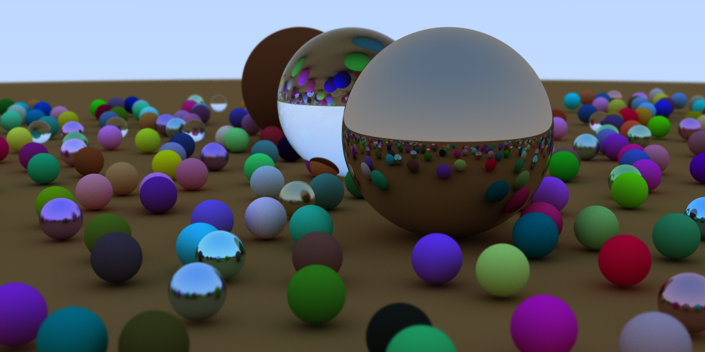

Raytracing in One Weekend
I got involved in a group that got started the past few weeks during the COVID measures that is essentially an online book club hosted via Zoom for graphics books and papers, organized by some people at UC Boulder. The first few meetings have been focused on implementing Raytracing in One Weekend - I made a few changes to the code supplied by the book, but a lot of the code is very similar to their implementation. I'm going to work through the rest of the series, and then I plan on implementing a GPU-based version. Some important things to focus on are the acceleration structures like BVHs, and I will need to think about how to linearize these structures to prepare them to be passed into a compute shader using SSBOs.
Introduction
The general structure of the raytracing part of the program is spelled out in detail here. My changes and improvements included adding a preview that loads the averaged samples into an OpenGL texture to give you a sense of how close it is to converging, dearImGUI windows to report the number of completed samples, allowing runtime changes in the number of samples and letting the user terminate execution early if they are satisfied with the result. I also multithreaded the sampling with std::thread and saw a 6x speedup over my initial implementation. I added PNG output, made the random number generation non-deterministic with std::random, and created a few test models (materials test, apollonian gasket - see below).

Implementation
I implemented all this in my work-in-progress engine that bears the working title 'not-quite-an-engine'. My notion with this is to create a starting point that will allow me to quickly iterate on and experiment with ideas that I find in books or online, and provide a range of functionality that may be relevant to these projects. It includes things like noise functions (perlin, heightmap generation), PNG input and output with LodePNG, windowing and input capabilities through SDL2, shader compilation wrapper functions for both standard vertex/fragment pairs and compute shaders, dearImGUI windows to do all manner of interface widgets, my various C++ includes, vectors with GLM, GLEW and OpenGL includes, and provides a consistent place to do all your #define statements.

Future Directions
The Apollonian gasket was a cool little demo, based on a ruby script found here. I am looking forward to digging into the next book in the series, Raytracing: The Next Week.